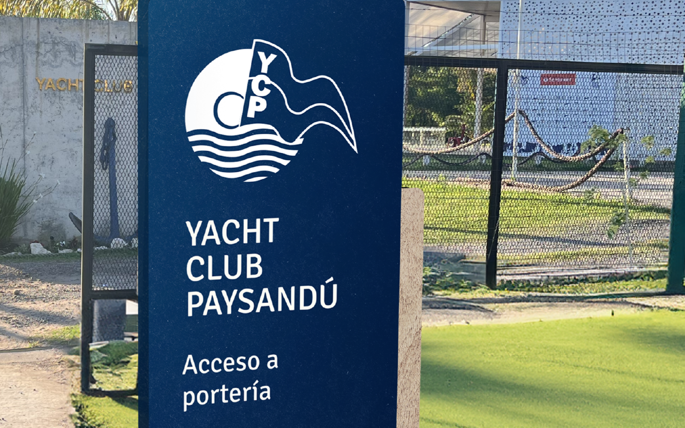
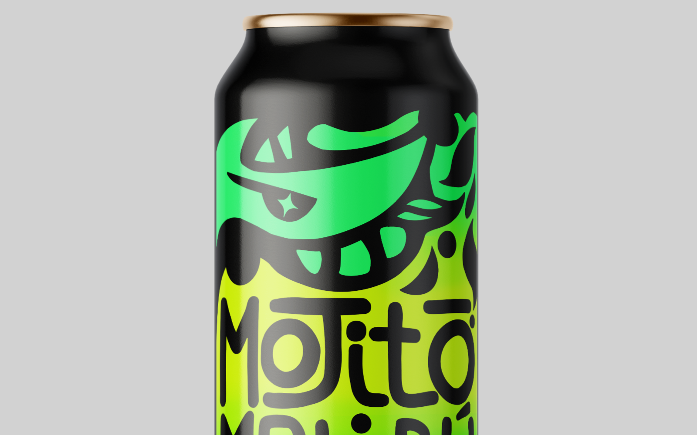
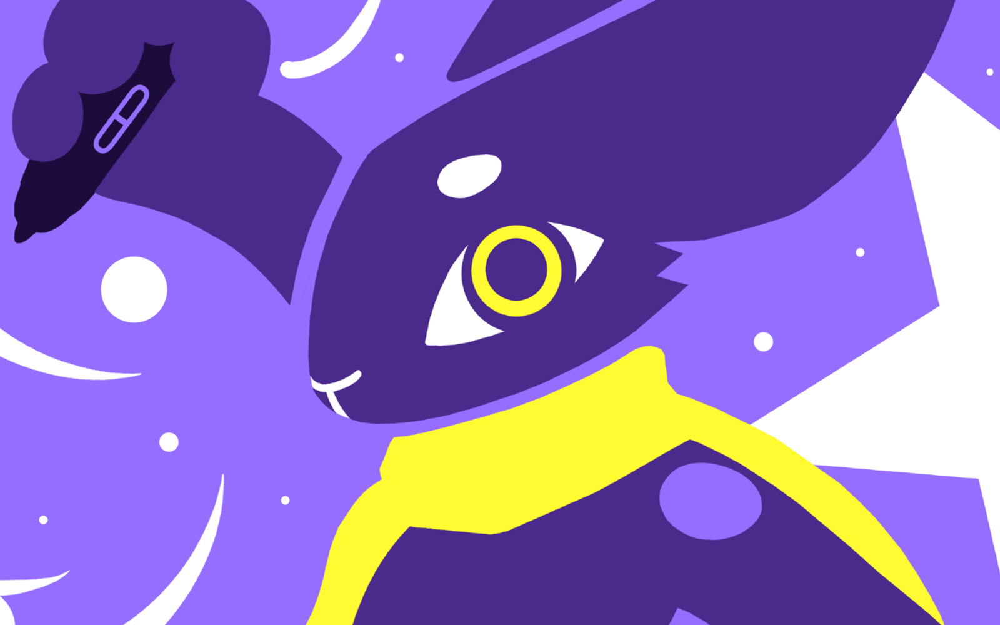

Soy Lucas de Souza, Técnico Diseñador Gráfico y me especializo en branding, diseño editorial, ilustración de portadas y afiches promocionales. Para mí, diseñar es comunicar: cada proyecto es un reto donde la intuición y la técnica trabajan en conjunto para dar forma a ideas que realmente conecten con las personas.
La liebre, animal representativo de mi marca, es símbolo de astucia e ingenio. Esa energía me acompaña en cada proceso creativo, trabajando con rapidez, enfoque y proactividad en búsqueda de la mejor solución.
Creo que el diseño tiene el poder de transformar la forma en que las personas perciben una marca o un proyecto, y esa idea me inspira a trabajar en cada detalle para que cada pieza cumpla su propósito y cuente una historia auténtica.
Construir un camino profesional donde el diseño sea un puente claro entre las ideas y las personas. Aspiro a crear identidades y piezas visuales que resuenen en la memoria. Quiero seguir creciendo junto a proyectos que valoren la creatividad y el ingenio como estrategia para impulsar sus mensajes.
Diseñar con intención. Cada decisión busca equilibrar creatividad, técnica y sentido comunicacional para ofrecer soluciones claras, funcionales y visualmente atractivas. Mi misión es acompañar a cada cliente a encontrar la mejor forma de expresar su esencia, construyendo resultados efectivos y llenos de personalidad.
Ofrezco un enfoque de diseño ágil, intuitivo y estratégico, capaz de transformar ideas en piezas visuales coherentes y memorables. Trabajo con cercanía, escuchando y entendiendo el corazón de cada proyecto, para luego darle forma con creatividad, precisión técnica y una mirada fresca que garantiza resultados auténticos y efectivos.
Si te interesa trabajar conmigo, puedes enviarme un mensaje a través de mi correo electronico